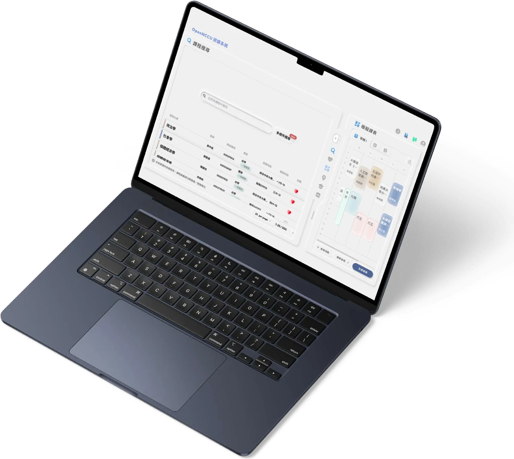
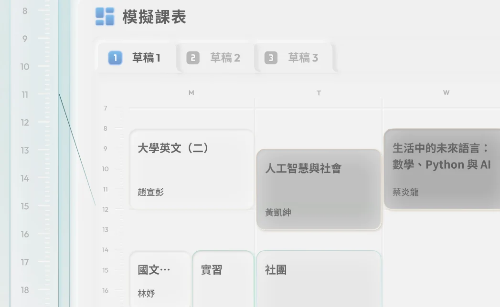
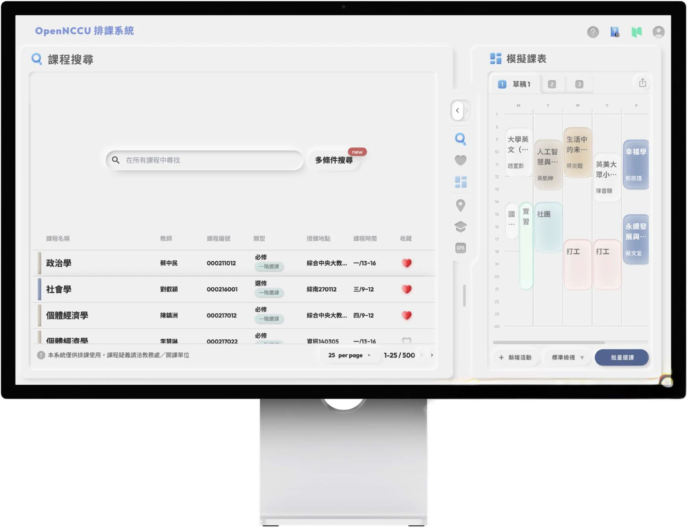

- 我的角色
- UI/UX 設計
- 設計範圍
- Wireframe、使用者流程、介面與互動原型
- 協作
- 與 PM 討論需求及設計迭代
專案背景
既有模擬課表主要用來排課，但學生一週還有社團、打工與個人行程。新增自訂活動後，時間長短不一的活動也會出現在格線裡，如何讓起訖時間清楚，同時保有卡片的閱讀空間，成為設計重點。
設計重點
把個人活動放進既有課表
在模擬課表中加入自訂活動，讓使用者能在同一個介面安排與查看課程和個人行程。
用尺規式時間軸定位活動
將細刻度與時間軸放在課表側邊，讓使用者從卡片位置對照活動起訖時間，為卡片上的名稱與內容保留空間。




設計心得
這是我首次完整參與的介面設計專案。我透過與 PM 討論並反覆檢視原型，練習在功能資訊與畫面可讀性之間做取捨。